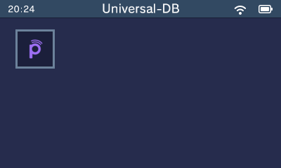

Before we begin anything, we will want to Turn on the 3DS while holding SELECT, it will pull up a menu, you will then turn on the settings "Enable loading external FIRMS and modules" AND "Enable game patching", then press START to save your changes!
We are now going to install something called "Universal-Updater", This app will allow us to install the nececary things right on our 3DS. (skip this part if you already have this.)
Universal-Updater Download page Here
Click on "Download Universal-Updater.cia", and go get your 3DS's SD card ready!
Go to your File Browser and go to your SD card, and look for the folder called "cias", if it doesnt exist, create a folder now.
With your "Universal-Updater.cia" file, drag it alllllll the way to your SD cards "cias" folder, once that is done, eject your SD card and put it back into your 3DS, we are almost to the main part!
Once you have your SD card back into your 3DS, turn it back on, and go to the app called FBI.
Once you are into the FBI app, follow these images:
Once you get to the .cia file, press A on it, and press A on "Install and delete CIA", this will install the program and remove the .cia from your SD card!
When you do that, just let it install, and when its finished, close FBI, and you should get a giftbox containing Universal-Updater!!!
Congratulations, you have finished Part 1!, now for the main event...
Welcome to the Universal-Updater shop thing!, here we are looking for an app called "Nimbus"
To find it, tap on the magnifying glass, and type in "nimbus", you should find an app with the Pretendo logo!
Press A, then make sure that you pick the .cia file for nimbus!
Press A on it, then wait for it to finish, if it asks for further action, tap it then close the menu, if not then it installed just fine!
Congrats, you just installed Pretendo, but you arent just done yet., we still need to make an account and set it up!
Open up the Nimbus app, you should be presented with two options, either Pretendo or Nintendo.
Make sure you pick Pretendo! It should restart the device to swap to Pretendo!
Once this is done, you will want to go back to your computer, because we need to create a Pretendo account!
Go to the Pretendo website, and make an account, by clicking the link below!
After you have registered, You are going to go to System Settings on your 3DS, and press "Nintendo Network ID Settings" at the top, this should start off as if you are linking a nintendo account for the first time if you are still connected to Pretendo, if not, go back to Nimbus and make sure Pretendo is selected.
Continue as if you were signing into a nintendo account, When you reach the two options to either "Link an account" or "Create New", pick the one that says link account.
It will then ask you about console linking, just scroll down and click Understood.
It will them prompt you to enter your "Nintendo ID details", here you will enter your username, email and password and such from when you registered on your PC.
If you get any kind of errors on this part, either make sure you entered your details correctly, or try again a few times, or later.It will ask if you wanna use your Personal Mii, or the one linked to your account (which is a default one), you can choose yourself, Pretendo will Automatically update it on their website.
And you should be done!, but before we finish off, go back to your "Nintendo ID Settings", and keep scrolling till you find something along the lines of Email Verification.
Check your email that you signed up on Pretendo with, and type it into your 3DS, and it will verify the email.
Well, we can always start off with the Friends list!
SOMETHING TO NOTE: Pretendo servers have their own Friend Codes, Nintendo and Pretendo CANNOT friend each other and vice versa, so you will have a Pretendo Friend Code that you will now use. (Dont worry, your Nintendo one is safe and sound in Nimbus, waiting to be swapped back to when you wanna!) And as i can find, there is NO POSSIBLE WAY to use your old Nintendo friend code on Pretendo, just use the new one you are given.Your Pretendo Friend Code can be found in the same place as you would normally find it, in your Friends list!
Remember to send your code too if you want to be friends, both parties must have each others codes!
Pretendo says you can change it on your 3DS... but that doesnt seem to be true, and there is an edit option when you check your pretendo profile on their website, however its unavalible, so id say wait for pretendo to get it working again, if i find another way ill put it here.
It seems that when someone is on your friends list, they sometimes appear in Streetpass! so be sure to write them a personal message! o(≧▽≦)o
In short, No. Because in order to unlink your account from a 3DS, you have to either delete the account, or factory reset your 3DS.